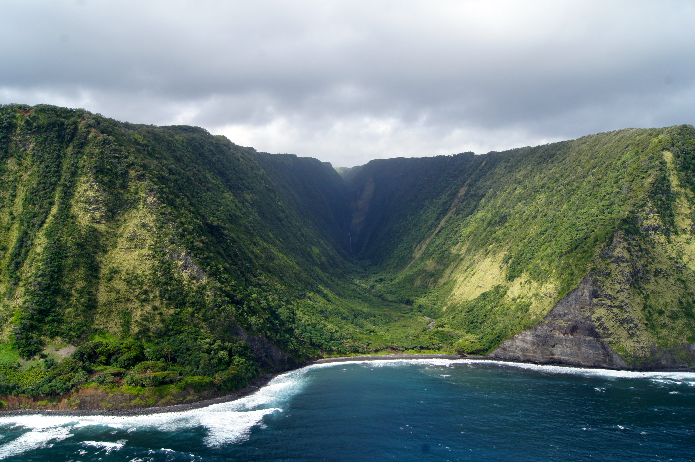

Just like you i have had some days were i need to go far from home to clear my mind , but just like you i did not know where to start since we live in a big world and it takes time to find the best places for you and contact details. Worry less i have done the research and made a list of my TOP FIVE places to visit around the world. In this BLOG you will find the :
•BEST PLACES TO VISIT
•REASONS I RECOMMEND THEM
•CONTACT DETAILS
•ADDRES
BRACE YOURSELF
CONTENT
1. Island of Hawai'i

MOUNTAIN VIEW IN HAWAII
WHY VISIT HAWAII
With year-round warm weather, stunning natural beauty, and a rich culture
, Hawaii has earned its spot on the top of many people's bucket lists.
Each day, thousands of people arrive, excited to experience the island chain.
"It is important to Hawaii to uphold the values of our native culture and
we have been excellent in portraying the spirit of aloha in Hawaii and
across the world, but we also need to ensure that our visitors are also on
the same page," Malia Sanders, executive director at the Native Hawaiian
Hospitality Association, told USA TODAY.
There are many reasons why one should visit Las Vegas. Known as the ultimate
playground, the city is colorful and vibrant, making it an ideal destination
for various travelers looking to explore its entertainment, cuisine, and
nightlife sceneLas Vegas attracts visitors from all corners of the world
who are looking to explore the city’s best tourist attractions. From the
famous Las Vegas Strip to the wild pool parties, uncover the beauty of Sin
City and find out why you should visit Las Vegas at least once in your lifetime..
Victoria Falls is literally the greatest tourist attraction in Zimbabwe and Zambia
and one of the 7 Natural Wonders of the World. In 2019, around one million tourists
visited Victoria Falls!
Victoria Falls was named after the reigning Queen of England
by Scottish explorer,
missionary, and anti-slavery champion, Dr. David Livingstone. The locals called the
falls Mosi-oa-Tunya meaning “smoke that thunders”. Many people still refer to this
nickname, which accurately defines the power of the falls crashing into the canyon
floor.
• It is the largest waterfall in the world based on width and height.
• It measures one mile wide (1.7 km) and 360 feet high (108 meters).
• The Victoria Falls became a World Heritage Site in 1989
• This means it belongs to all the people of the word, irrespective
of the territory on which the World Heritage site is.
Set on a rugged peninsula between the Indian and Atlantic Oceans with iconic Table Mountain
as its backdrop, the city of Cape Town sits in one of the world's most spectacular settings.
But the scenery isn't restricted to the city alone: short drives take visitors to white sandy
beaches, traditional fishing villages and wild mountain ranges while must-see destinations
such as Cape Point, the Cape Winelands and the whale-watching capital of Hermanus are easy day
trips. With so many beautiful places to explore, you only have to visit Africa's favourite city
once and you’ll probably be planning your next Cape Town travel holiday before your tan’s
had time to fade. Cape Town will appeal to just about anyone in the mood for a holiday:
romantics and honeymooners will love the exquisite accommodation and idyllic views; families
with children can share a beach with inquisitive penguins; adventure lovers will relish the
chance to discover the secrets of Table Mountain - one of the 7 Natural Wonders of the World!
- and gourmets shouldn't miss out on South Africa's finest food and wine experiences, served up
at an affordable price. It's a multi-faceted destination that deserves to be explored.
Naturally, there are dozens of scheduled tours on offer but many visitors prefer to travel to
Cape Town and discover this friendly and slow-paced city at their own pace: take some time to
browse African craft markets in the walkably compact city centre, visit the colourful Cape
Malay suburb of Bo Kaap, lounge on its best beaches and stroll around the ever-popular V&A
Waterfront with its shops, restaurants and luxurious hotels.
• Balinese culture fosters beautiful artistry amongst its people. There is regular, if not daily, participation in the Hindu-animist culture which include a lot of art and music. A very large proportion of the Balinese play the musical instruments used in their religious culture. A great many of them paint, sculpt, carve, and make jewelry whose designs come straight out of their culture. They have mostly resisted producing the homogenous knick-knacks that characterize the tourist shops in much of the world. For tourists this means a treasure trove of unique and beautiful crafts and the frequent opportunity of seeing them created right in front of you. There is live Balinese music in almost every street, rice paddy, temple and accommodation.
• The Hindu-Animist culture differs not only from the predominantly Muslim culture of the rest of Indonesia but from the Hinduism of India and its practice in the rest of the world. From a tourist’s perspective, the Balinese openly celebrate their religious traditions in the streets and in their temples. Their religion includes the people around them if they are reasonably respectful. A family funeral - with its unique traditions and artistry- is open to the public. While Hinduism has deep roots in serious study and practice, the Hindu-Animism of Bali feels more like a joyous participation. For tourists it is accessible and inviting.
• Bali is a very affordable destination for tourists once they have paid their air fares. While it is undeniable that it is so cheap largely due to the low salaries of the Balinese, the poverty seems much less oppressive than in many parts of the third world. It seems that way because of the very positive, outgoing, happy, and helpful nature of the Balinese.
• The artistry mentioned earlier has resulted in Balinese towns that are centered around one particular craft. Some places are centers of painting, others of stone carving, yet others of silver jewelry or wood carving or sarong making or custom-made clothing with unique fabrics. The Bali Aga people create a unique form of weaving called Ikat and an art form that resembles scrimshaw on what look like Venetian blinds of wood slats intricately carved with scenes from the Ramayana and other Hindu epics. This artistry is treasured by tourists and prominently displayed in the homes of people throughout the world. Frequently tourists will get a further appreciation of what they buy by seeing it made in front of them or having it custom made during their stay.
• While there are delightful people throughout the world, the Balinese, in my opinion and that of many others, are a treasure. They are good-natured, friendly, warm, playful, welcoming, inclusive, generous, creative, often talented, observant, and easy-going. If you forget their name , you have only to remind yourself it’s one of four names with an “e” sound before them for a woman. I have been to their homes, weddings and funerals as a frequent tourist. The Balinese will always be supportive of your efforts to learn Balinese and/or Indonesian. When I have encountered the Balinese on cruise ships in other parts of the world, their personalities stand out there as well.
• I find the “liberalism” of Bali to be far more meaningful and satisfying than it's being an Indonesian locale where one can drink and party. Hell, you can do that in enough locales throughout the world! Until 1983, when Islamic mores forbid it, this island was “clothing optional.” Not that the Balinese would have used such a term growing out of sexually uptight Western countries! They were just often topless or fully naked in public swimming places, rivers, and front porches. There is much that the Balinese currently hide - not just from Muslims - but from sexually immature Westerners. Privately these people are very free in what they chose to do and with whom.
• The architecture, the art, the music, the clothing, the social mores and the Hindu-animist culture are a cohesive whole. They are not separate domains. They refer to each other continually. This is true of other cultures as well , but in Bali it seems all pervasive. That makes for a highly interesting, beautiful, satisfying experience of another culture for tourists.